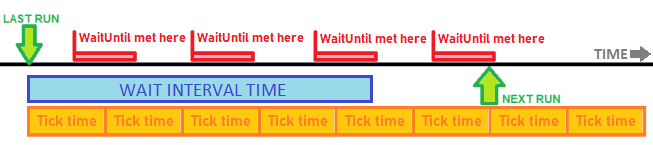

Cron module
Module name: cron
You have to enable this module in site/_modules.php file to use it.
This module enables you to run scheduled tasks(php functions), which are desired to run after specified interval
in specified time. The tasks can be defined by the HOOK_cron hook.
If the codkepmodules are located under the site directory, you can enable cron module by adding the following line
to the _modules.php:
"cron" => "codkepmodules/cron/cron.php",
Trigger the cron module to operate
The cron module does not triggered automatically because the CodKep is only run under http page load. If the page is not visited until a large period of time the system does not receive the control to run anything.
This module (by default) define a path /cron which can be used to trigger the cron module.
This /cron path receives a cron_key parameter to prevent unauthorized requests.
You have to set this cron_key value in _settings.php. (Empty by default, and not work this way)
//_settings.php
...
global $codkep_cron;
$codkep_cron->cron_key = 'SampleCronKeyValue0123456789ABCDefghij';
If the cron_key value is set, you can trigger the cron system by a simple curl command.
(Recommended to place in cron)
#With cleanurl:
curl -s -k https://mysite.local/cron?cron_key=SampleCronKeyValue0123456789ABCDefghij > /dev/null
#Without clean url
curl -s -k https://mysite.local/index.php?q=cron&cron_key=SampleCronKeyValue0123456789ABCDefghij > /dev/null
The time interval you set in cron affects the precision of the scheduling of tasks. More frequent triggering time enables more precise scheduling with more performance waste.
Poor man's cron
Although not recommended, it is possible to trigger cron tasks after every page load in HOOK_after_deliver hook
in case you can not call the /cron path externally.
Please avoid this, because this case the cron system is triggered and run after every page load which can be a performance bottleneck.
function hook_mymodule_after_deliver()
{
cronmodule_tick();
}
Defining a scheduled task
You can define scheduled tasks by the HOOK_cron hook.
The hook should return simple arrays of associated array, where each associative array define a task to schedule.
The inner associative array could be the following values:
"callback"= callback function name- This is a mandatory field, contains the callback function name to run as scheduled task.
"interval_minute"= number,- Adds the specified number of minutes to the wait time between running the desired task.
"interval_hour"= number- Adds the specified number of hours to the wait time between running the desired task.
"interval_day"= number- Adds the specified number of days to the wait time between running the desired task.
"interval_month"= number- Adds the specified number of months to the wait time between running the desired task.
"waituntil_minute"= number- The task is only executed when the current minute is equal or greater than the value specified here.
"waituntil_hour"= number- The task is only executed when the current hour is equal or greater than the value specified here.
"waituntil_dayofweek"= number- The task is only executed when the current day of the week is equal or greater than the value specified here.
- 0 is Saturday
- 1 is Monday
- 2 is Tuesday
- 3 is Wednesday
- 4 is Thursday
- 5 is Friday
- 6 is Saturday
- The task is only executed when the current day of the week is equal or greater than the value specified here.
"waituntil_dayofmonth"= number- The task is only executed when the current day of the month is equal or greater than the value specified here.
"waituntil_monthofyear"= number- The task is only executed when the current month is equal or greater than the value specified here.
The task is performed when the cumulative time interval has elapsed since the last run and the specified wait restrictions have been met. 
The following sample code defined two task:
function hook_mymodule_cron()
{
return
[
[
'callback' => 'every_week_saturday_morning',
'interval_day' => 6,
'waituntil_dayofweek' => 6,
'waituntil_hour' => 7,
],
[
'callback' => 'every_day_dawn',
'interval_hour' => 22,
'waituntil_hour' => 4,
'waituntil_minute' => 30,
],
];
}
function every_week_saturday_morning()
{
// Runs every week on saturday after 7:00am
}
function every_day_dawn()
{
// Runs every day after 4:30am
}
Settings
The cron module have some settings which can set in site settings.
| name | default | description |
|---|---|---|
$codkep_cron->cron_key | "" | You have to set an arbitrary key value here, which required to pass as cron_key parameter when externally trigger the cron url path. |
$codkep_cron->define_routes | true | If this value is set the cron module defines the cron path. |
$codkep_cron->block_unauthorized_requests | true | If this value is set the cron module use the CodKep's client ip blocking mechanism to block unauthorized (failed) cron requests. See user module to tune block system. |
$codkep_cron->urls | "cron" | This value contains the default path of the cron module to externally trigger cron. |
$codkep_cron->lastrun_sqltable | "cron_lastrun" | This value holds the sql table name which used to store the task's last running time. |
$codkep_cron->runinfo_to_log | true | If this value is true the module generate a log message when a task is executed. |
$codkep_cron->debug_to_log | false | If this value is true the module write detailed information to log about the scheduling time of the tasks. (In every cron trigger action) |